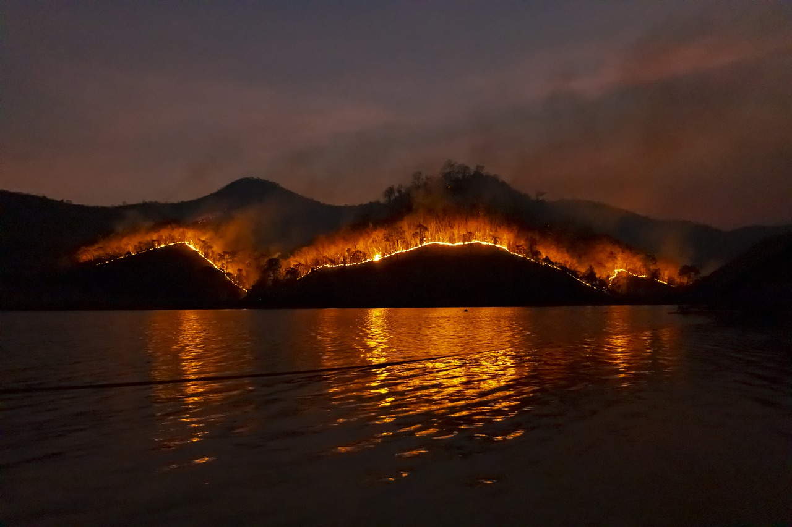
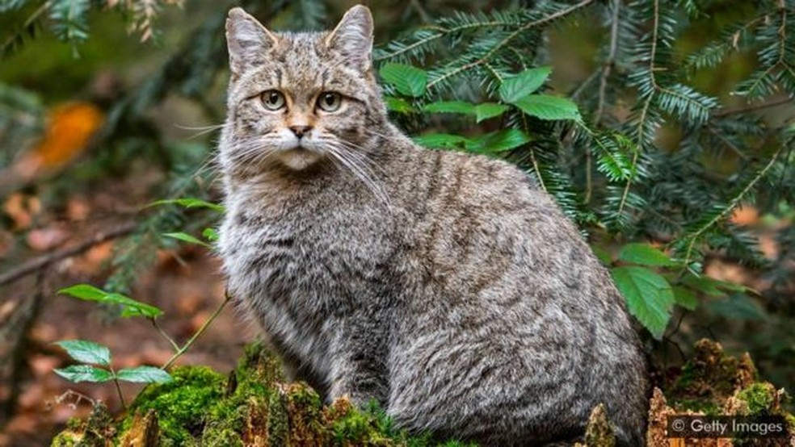

Queimadas No Pantanal
Clique na imagem para saber mais.

Duração de furacões aumenta com aquecimento global
Clique na imagem para saber mais.
Geleiras derretendo na China
Aquecimento Global
Mudança climática: as imagens impressionantes de geleiras derretendo na China
Última girafa branca do mundo
Animal em extinção
Espécime macho é a única restante de um trio portador do raro traço genético, depois que uma fêmea branca e o filhote dela foram mortos por caçadores ilegais no Quênia.
Corredores Ecológicos
Preservação do meio ambiente
Projeto Corredores Ecológicos restaura paisagens, beneficia animais

O mundo em uma reserva natural
Preservação da natureza
O plano para transformar metade do mundo em reserva ambiental
Desmatamento em Rondônia
Desmatamento
Rondônia tem aumento de 88% nos alertas de desmatamento em outubro, revela Imazon
França quer punir delito de 'ecocídio'
Emissão de carbono na atmosfera
Proposta apoiada pelo governo prevê pena de até dez anos de prisão e multa de até 4,5 milhões de euros para quem causar danos graves ao meio ambiente.
Sustentabilidade e Ecologia
Aprenda sobre Sustentabilidade e Ecologia.
Ecobags
Qual a importância das sacolas ecológicas ?
Ecobags são produtos criados para substituir a utilização das sacolas de plástico em favor do meio ambiente.
Separação do Lixo
Por que é tão importante separar o lixo ?
A reciclagem de lixo no Brasil ainda é bastante deficiente e precária devido a falta de empresas especializadas em coleta seletiva.
descarte de oleo de cozinha
Como devemos fazer
O óleo de cozinha usado pode parecer inocente, mas é um grande contaminante. Um litro de óleo descartado no ralo da pia pode poluir um milhão de litros de água potável.
Horta Sustentável
Importância da horta na escola
Uma horta na escola funciona como um ótimo recurso didático. São diversos benefícios que esse tipo de projeto pode proporcionar.

Garrafas PET
Tudo sobre elas
Vistas como um grande problema, as embalagens PET também podem ser uma grande solução. Com criatividade e um pouco de esforço, esse plástico pode ser reaproveitado de inúmeras maneiras.
Artesanato com Pneus
Dicas para fazer artesanato com pneus
Você sabe o que fazer com aquele pneu gasto, careca, que não vai usar mais? Descartar em qualquer lugar ou deixar em casa acumulando poeira ou, pior ainda, água não é uma boa ideia. Então, que tal se inspirar em alguns bons exemplos de reuso desse item? Confira nossas dicas e modelos de artesanato com pneus!